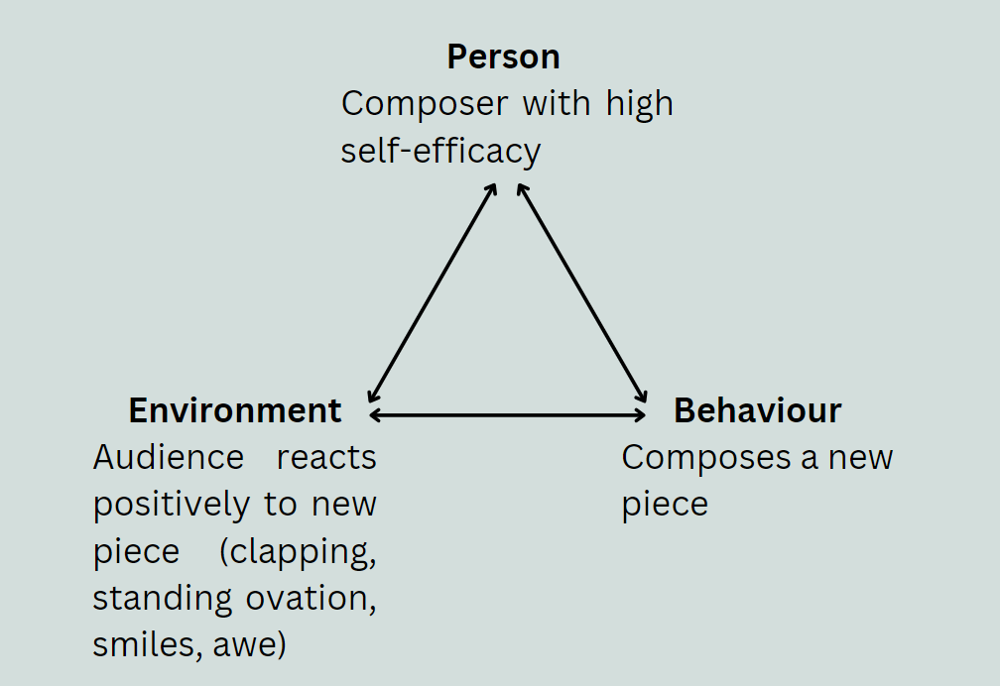

****maybe this should move to experiences
This theory is based on the fact that learning is very social. It proposes that much of our learning happens through observation of others, practicing, and then getting feedback about our performance from others (Schunk, 20xx). Learning is often defined by experiences, including other people we encounter or inspire us. Schunk (20xx) mentions that we tend to replicate behaviour from people who are more similar to us because then it is more likely that we obtain the same outcome as them. The people we copy might be our models. ***connection with experience, culture
Social Cognitivism can be seen as a branch of cognitivism because it involves many changes in our mental processes. We need to pay attention to our environment and what we learn from it, and this information learned from the environment will be eventually stored in long-term memory. However, social cognitivism is unique because it places the focus on the learner AND the people that interact with the learner, as opposed to just what goes on inside the learner's mind. The emphasis on the learner differentiates this theory from behaviourism since a behaviourist would claim that the learner would not really have control over what they learn - it is only through rewards or punishments from other people that one would learn.
Social cognitivists can visualize learning through the interactions between a person, the environment, and behaviour. The person is considered a social agent who uses their cognitive processes and social circles to make decisions and learn. They might be influenced by reinforcements and punishments in the environment which causes them to react and act in the world. (I know this is not a great explanation of the triangle we saw in class). This constant interaction between these three variables is seen in composing: good feedback on a piece reinforces the composer's self-efficacy and therefore, will be more likely to compose more pieces in the future.
***move to experience, in the social part Learning depends on the experiences we live (Lecture 2). One's style of composition is often influenced by an experience, another inspiring composer, or the music we listen to. Style might also be influenced by your teacher. One can learn patterns or textures in music by listening and analyzing pieces they enjoy. Although I like to experiment, my personal style is probably similar to the late-romantic era of classical music. I am inspired and learn from composers such as Dvorak, Chopin, Tchaikovsky, and I try to create large dramatic effects using a large orchestra. I learn how to capture emotions or a story through music by seeing how these composer do it. I also tend to follow similar structures of music that were popular in that time. For instance, many composers wrote Scherzo's in a specific form: start with a theme, then a secondary theme (usually repeated twice), return to the main theme (these form section A), then a completely new section usually called "trio" (section B), then repeat section A all over again with an optional coda or conclusion (Wikipedia). I have used the exact same structure when writing Scherzo-like pieces as well.
No mechanism for learning like behaviourism and cognitivism...